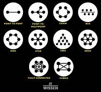

Netzwerk-Topologien

Netzwerk-Topologien
Netzwerk-Topologien beschreiben die Struktur und den Aufbau eines Netzwerks. Sie bestimmen, wie Geräte miteinander verbunden sind und wie Daten übertragen werden.
Stern-Topologie
Die Stern-Topologie wird am häufigsten verwendet. Alle Geräte sind mit einer Switch (in der Mitte)verbunden.
- Vorteile: Hohe Ausfallsicherheit, einfache Fehlerdiagnose.
- Nachteile:Wenn die Switch in der Mitte aussfällt ist das gesamte Netzwerk betroffen.
Bus-Topologie
Bei der Bus-Topologie sind alle Geräte an ein einziges Übertragungsmedium angeschlossen.
- Vorteile: Wenig Kabelaufwand und einfache Installation.
- Nachteile: Eine Störung des Hauptkabels kann das gesamte Netzwerk lahmlegen.
Ring-Topologie
Hier sind alle Geräte in einem geschlossenen Kreis miteinander verbunden. Daten werden von Gerät zu Gerät weitergeleitet.
- Vorteile: Gleichmässige Lastverteilung, keine Kollisionen.
- Nachteile: Fällt ein Gerät oder ein Kabel aus, kann das gesamte Netzwerk gestört sein.
Mesh-Topologie
In einem Mesh-Netzwerk sind alle Geräte direkt miteinander verbunden. Dadurch gibt es mehrere Datenwege.
- Vorteile: Kann nur schwer ausfallen und hat eine optimale Redundanz.
- Nachteile: Es ist teuer und hat komplexe Verkabelung.
Hybrid-Topologie
In der Praxis werden oft verschiedene Topologien kombiniert. Man spricht dann von einer Hybrid-Topologie. Beispielsweise kann ein Unternehmen eine Stern-Topologie für Büros und eine Bus-Topologie für Produktionsnetzwerke nutzen.
Baum-Topologie
Die Baum-Topologie ist eine hierarchische Struktur, die eine Kombination aus Stern- und Bus-Topologien ist. Geräte sind in Gruppen unterteilt, die immer mit einem zentralen Knotenpunkt verbunden sind.
- Vorteile: Skalierbar und ist gut für grosse Netzwerke geeignet.
- Nachteile: Wenn der zentrale Knotenpunkt ausfällt, können mehrere Netzwerksegmente betroffen sein.
Fazit
Die Wahl der richtigen Topologie hängt von den Anforderungen des Netzwerks ab. Zum Beispiel die Stern-Topologie wird oft in Büroumgebungen benutzt und zum Beispiel Mesh-Netzwerke benutzt man in kritischen Infrastrukturen. Jede Struktur hat ihre Vor- und Nachteile, die bei der Planung berücksichtigt werden müssen.